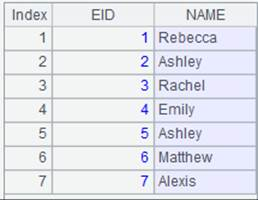
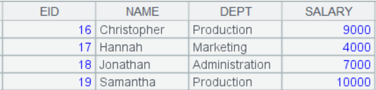
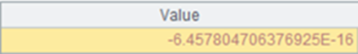
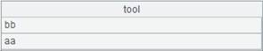
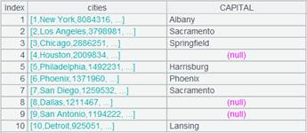
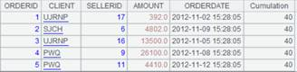

Description:
Execute a SQL statement on a data source and return a table sequence composed of the query results.
Syntax:
|
db.query( sql {,args ��}) |
|
|
db.query(A,sql{,args ��}) |
Perform sql based on A and return a table sequence composed of query results. Here, args can be an expression evaluated based on each member of A. This type of syntax can work with @idx options. |
|
db.query(call dfx(){,args ��}) |
Connect to esProc-ODBC data source db to call the specified dfx file and return a result |
Note:
The function performs the specified SQL query sql on the data source db and returns a table sequence composed of query results.
When there��s only one table following FROM in the SQL statement sql, the key of the result table sequence will be automatically set.
The function supports simple SQL.
Parameters:
|
db |
Data source connection, including esProc-JDBC source |
|
sql |
A SQL statement, like select * from table. |
|
args |
An argument value passed into the specified SQL command sql. It can be a constant or an expression. The comma is used to separate multiple arguments. |
|
A |
A sequence. sql is executed on each member of A. Generally args is computed against each member of A and the value is passed to sql for execution. |
|
dfx |
A cellset file; can be specified using a relative path, which is relative to the search path, or an absolute path |
Options:
|
@1 |
Return only the first-found record satisfying the condition, which is a single value or a sequence |
|
@i |
Return a sequence if the result set has only one column |
|
@d |
Convert the numeric data type to the double data type, instead of the decimal data type |
|
@x |
Close the database connection automatically when the statement finishes execution. Only valid with the database connection established through the connect function |
Return value:
A table sequence composed of results of executing sql.
Example:
|
|
A |
|
|
1 |
=demo.query("select * from EMPLOYEE where DEPT=? ","Sales") |
|
|
2 |
=demo.query@1("select * from EMPLOYEE where DEPT=? ","Sales") |
[3,"Rachel","Johnson","F","New Mexico",1970-12-17,2010-12-01,"Sales",9000]; Return a sequence composed of field values of the first record |
|
3 |
[1,2,3,4] |
|
|
4 |
=demo.query(A3,"select * from EMPLOYEE where EID=?",~) |
 |
|
5 |
=demo.query@i(A3,"select SURNAME from EMPLOYEE where EID=?",~) |
Return the result as a sequence |
|
6 |
=demo.query@i("select DEPT from DEPARTMENT") |
 Return the result as a sequence |
|
7 |
=mysql.query@d("select * from ta") |
 |
|
8 |
=connect("demo") |
|
|
9 |
=A8.query@x("select DEPT from DEPARTMENT") |
Close the database connection automatically when the execution is over. |
|
10 |
=myproc.query("call hsql(?)",10) |
hsql.dfx is in the search path. Below is the file:
myproc is the esProc-ODBC data source name; the parameter value is 10. Below is the result:  |
|
11 |
=myproc.query("call G://hsql(?)",10) |
hsql.dfx is in the root directoy on drive G; same content and same result as shown in A10 |
|
12 |
=connect("esproc-JDBC") |
Connect to esproc-JDBC data source  |
|
13 |
=A12.query("select * from D:/City.txt") |
Query a local data file thorugh esproc-JDBC  |

Related functions:
Description:
Find a certain field of a specified row in a table sequence/memory table.
Syntax:
k.r(T,F)
Note:
The function finds F field of row k in table sequence/memory table T, which is equivalent to T(k).F. Won��t check whether k is within T��s length.
Parameters:
|
k |
Row number |
|
T |
A table sequence/memory table |
|
F |
A field of T; can be omitted |
Return value:
A record
Example:
|
|
A |
|
|
1 |
=demo.query("select EID,NAME from employee") |
|
|
2 |
=1.r(A1,NAME) |
Get the Name value in the first row of A1��s table sequence |
|
3 |
=1.r(A1) |
Since parameter F is absent, list all field values of the first row |